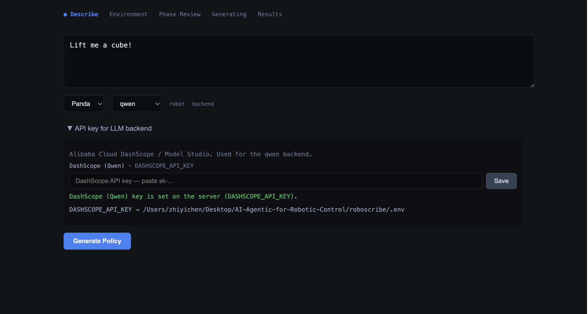
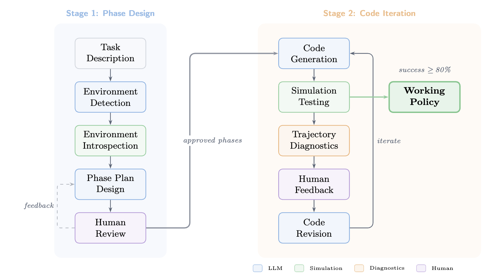
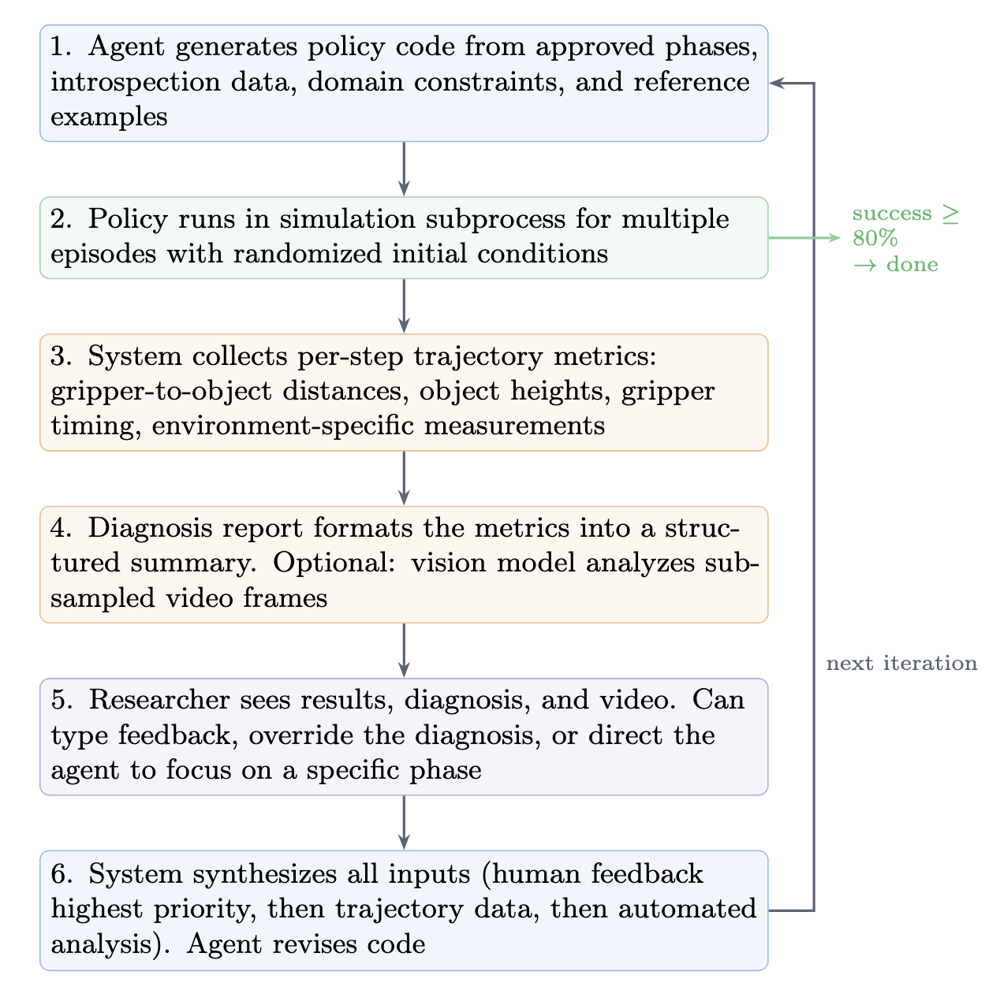
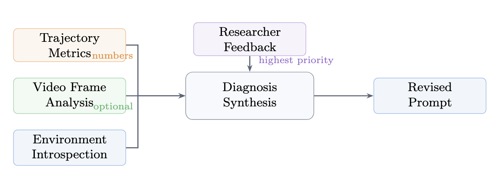
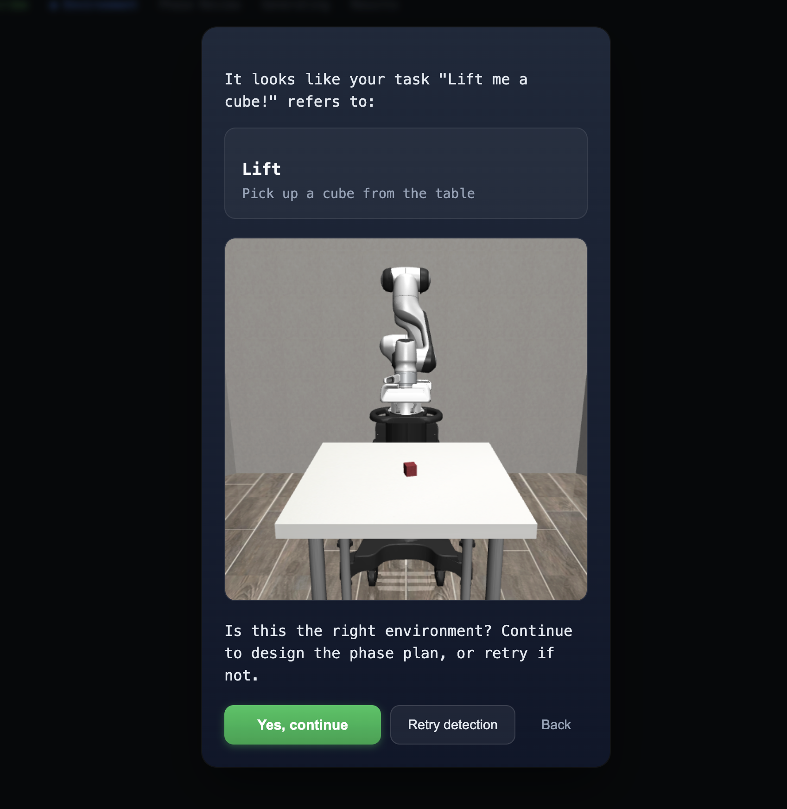
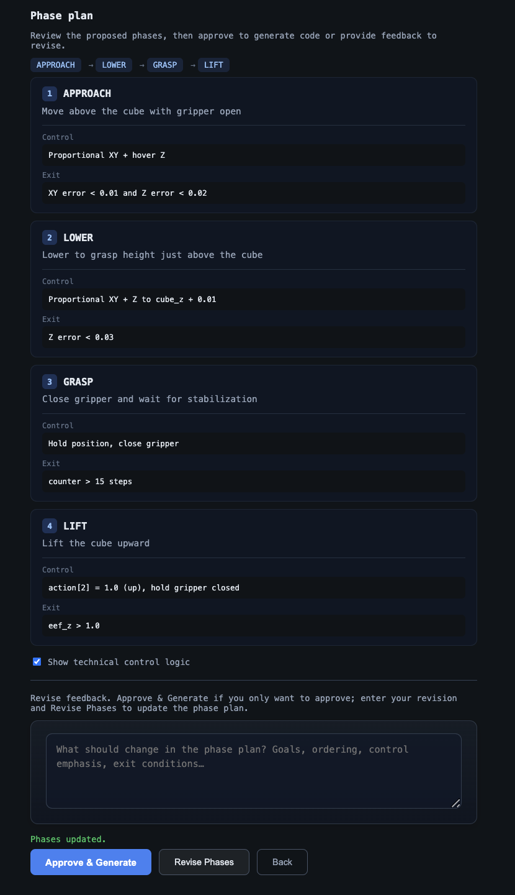
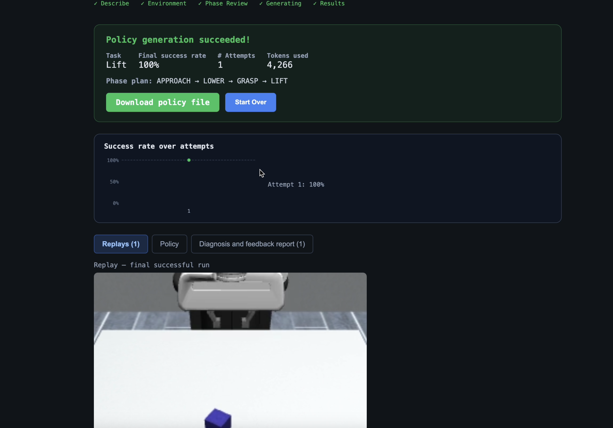

1
Describe task & set up
Natural-language goal and initial setup before planning.

Project website · abstract of our report
Language-guided policy generation for robosuite manipulation tasks. Describe a task in natural language → the system designs phased strategies with human approval → an agent writes code, rolls out in MuJoCo, diagnoses failures from trajectory metrics, and iterates until policies meet a success threshold.
UCLA
Writing robot policies shouldn’t take hours. RoboScribe turns natural language into executable robot control code — automatically generating, testing, and debugging policies in simulation so researchers can focus on ideas, not boilerplate.
How tasks flow through the pipeline, which tools the agent uses, and how diagnosis feeds the next iteration.

Figure 1. Pipeline overview.

Figure 2. Tooling available to the agent.

Figure 3. Diagnosis and feedback.
End-to-end screen capture: task description → environment confirmation → phase review → autonomous generation with simulation feedback → results and downloads.
YouTube: full UI run — task, phases, policy iteration, and success view.
Screenshots of the live app — aligned with the demo video. Replace placeholders when you capture Step 4–5.
Natural-language goal and initial setup before planning.

User confirms detected robosuite environment before phase design.

Review and approve the LLM-proposed phase plan.

The agent generates code, rolls out in MuJoCo, and iterates with diagnostic feedback.



Success rates across four robosuite tasks of increasing geometric complexity. All runs use Qwen, the Panda robot with OSC_POSE controller, and no human feedback during code iteration.


| Task | Geometric Precision | First Attempt | Iteration Helps? | Best Rate |
|---|---|---|---|---|
| Lift | Low (XYZ translation) | 100% | N/A (succeeds immediately) | 100% |
| Stack | Medium (two-object) | 0–100% | Yes (0%→100%) | 100% |
| NutAssembly | High (quaternion math) | 0–60% (variable) | No (regresses) | 40% |
| Door | High (rotation + pull) | 0% | No (stuck) | 0% |
The diagnostic system identifies "eef alignment error" and the agent fixes it in one revision.
| Attempt | Success | Diagnosis | Agent Action |
|---|---|---|---|
| 1 | 0% (0/10) | "eef not aligning with cube positions" | — |
| 2 | 100% (10/10) | — (success) | Fixed approach alignment logic |
RoboScribe works with robosuite manipulation environments via MuJoCo physics simulation.
# Python backend (includes all dependencies)
pip install -e "roboscribe/[sim]"
# React frontend
cd roboscribe/src/roboscribe/frontend && npm install# Terminal 1 — Backend
cd roboscribe/src/roboscribe
uvicorn roboscribe.server.main:app --host 0.0.0.0 --port 8000
# Terminal 2 — Frontend
cd roboscribe/src/roboscribe/frontend
npm run build && npm run preview
Open http://localhost:4173. To preview this
documentation site:
cd docs && python3 -m http.server 8080 →
http://localhost:8080.
| Provider | Env variable | Notes |
|---|---|---|
| Qwen | DASHSCOPE_API_KEY |
Free tier |
| OpenAI | OPENAI_API_KEY |
GPT-4o, vision diagnosis |
| Anthropic | ANTHROPIC_API_KEY |
Claude |
| DeepSeek | DEEPSEEK_API_KEY |
Budget-friendly |